论文阅读：MoCo系列论文解读
前言
本文介绍的三篇工作是何恺明关于动量Encoder对对比学习提升效果的研究，文章标题分别如下：
- MoCov1: Momentum Contrast for Unsupervised Visual Representation Learning
- MoCov2: Improved Baselines with Momentum Contrastive Learning
- MoCov3: An Empirical Study of Training Self-Supervised Vision Transformers
第一篇文章的工作主要在于引入队列作为负样本和momentum encoder，第二篇文章将MoCo做了改进后和SimCLR框架进行了对比，第三篇文章的主要工作在于使用ViT作为backbone，将ViT的效果和ResNet的效果做对比，证明ViT，也就是视觉Transformer的有效性。
MoCo v1
这篇文章发表在CVPR 2020上，主要对比普通端到端和Memory bank的方法：
- 提出使用队列中的表示作为负样本，将样本数量和batchsize解耦，从而使用更多的负样本做对比学习；
- 提出动量更新Encoder，从而保证队列中表示具有一致性。
Background
端到端方法
普通端到端的方法如图所示。
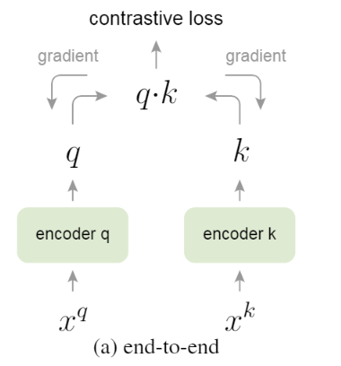它使用当前batch内的样本作为正样本和负样本。同一幅图片增广之后得到的图片分别为$x_k$和$x_q$，它们分别通过两个encoder计算出对应的表示$q$和$k$。如果两个表示来源于同一张图片，则把它们视为一对正样本，否则被视为一对负样本。
不难看出，这种方法的负样本数量和batchsize是耦合的。如：batchsize=$N$，那么$q$和$k$的数量都为$N$，对于某一样本来说，它的负样本对个数为$2N-2$。
Memory bank方法
Memory bank的方法如图所示。
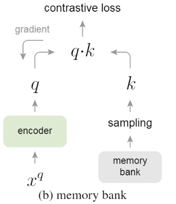Memory bank方法是把所有样本都储存在内存中，每次输入一个样本$x_q$时，从内存中取出之前它通过Encoder计算出的表示作为正样本，并从内存中采样其他样本作为负样本，进行对比学习。
这样的方法虽然不受限于batchsize的大小，而且能采样更多的负样本，但是，对于正样本来说，因为取出的是之前$x_q$通过Encoder计算来的表示，也就是上一个Epoch计算来的表示，所以表示间不具有一致性。同样的，采样出的负样本也有类似的问题。
Method
MoCo v1的方法如图所示。
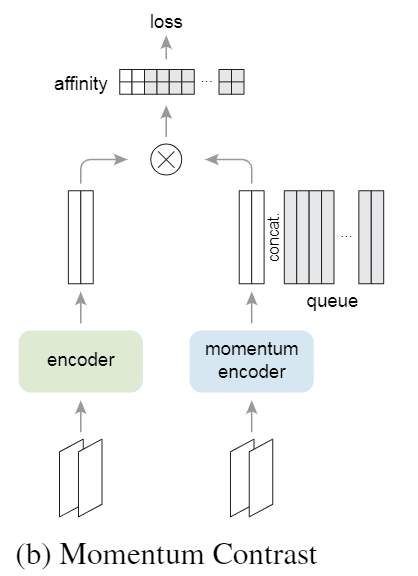所以MoCo引入了队列来将负样本数量和batchsize解耦合，通过引入动量的方式更新encoder计算表示，分别克服了端到端方法和Memory bank方法的两个缺点：负样本数量耦合和一致性。
MoCo v1的正样本对来源于同一幅图片的两个增广，负样本则全部来源于队列，直接把队列里的所有表示作为负样本。每个迭代动量Encoder计算完表示后，都会把新的表示推入队列中，把最老的表示dequeue出列。
对于动量Encoder，MoCo采用动量更新的形式，左边query encoder的参数为$\theta_q$，右边key encoder的参数为$\theta_k$，那么参数更新的公式为：
$$
\theta_k\leftarrow m\theta_k+(1-m)\theta_q
$$
其中$m$为超参数。这种动量更新的方式应该是参考了Adam优化器等早期采用动量更新的方法。
最后总体的Loss function为：
$$
\mathcal{L}q=-\log\frac{\exp(q\cdot k+/\tau)}{\sum_{i=0}^K\exp(q\cdot k_i/\tau)}
$$
这里说一点个人理解：
两个Encoder首先是将两个表示做近似，采用动量的方式则更好地将右边的表示和左边的表示缓慢接近，表示近似的同时，动量Encoder提供的样本也更好，这里的样本会放入队列中作为下一次迭代的负样本，因此正负样本都是更好的表示。
但是有点不太理解的问题，左边encoder的样本为$q$，那么对左边encoder求导，导数为：
$$
\begin{aligned}
\mathcal{L}q&=-\log\frac{\exp(q\cdot k+/\tau)}{\sum_{i=0}^K\exp(q\cdot k_i/\tau)}\
\frac{\partial \mathcal{L}q}{\partial q}&=\frac{\sum\exp(q\cdot k_i)}{\exp(q\cdot k+)}\cdot\frac{k_+\exp(q\cdot k_+)\sum\exp(q\cdot k_i)-\exp(q\cdot k_+)\sum k_i\exp(q\cdot k_i)}{\left[\sum\exp(q\cdot k_i)\right]^2}\
&=-\frac{k_+\sum\exp(q\cdot k_i)-\sum k_i\exp(q\cdot k_i)}{\sum\exp(q\cdot k_i)}\
&=\frac{\sum k_i\exp(q\cdot k_i)-\sum k_+\exp(q\cdot k_i)}{\sum\limits_i\exp(q\cdot k_i)}
\end{aligned}
$$
这里为了方便，把相似度函数直接用余弦表示，也就是乘积代替。如公式所示，左边的梯度由正样本与负样本期望的差决定，感觉很奇怪…
Experiment
实验方面，把MoCo 方法和其他两种方法做了对比，如图所示。
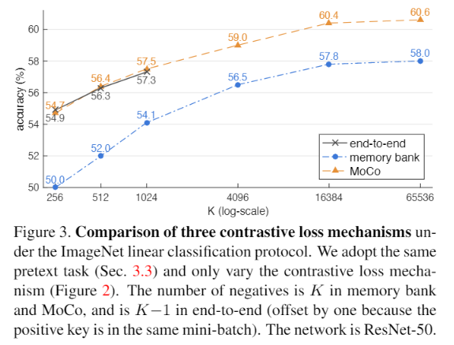End-to-end 方法的batchsize不能开得特别大，但是MoCo则没有这个限制，虽然在前面End-to-end方法的效果和MoCo差不多，但是后面就不能提供大量负样本了。
Memory bank的方法由于不具有一致性，所以效果比MoCo要低了几个点。
另外，实验中把超参数 $m$ 进行了消融，如图所示。
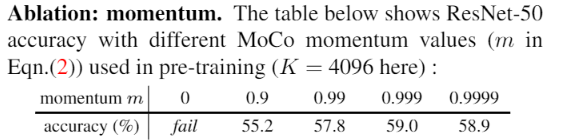更大的$m$可以使训练更加稳定，当$m=0$的时候，相当于动量encoder直接拷贝另一个encoder的参数，网络更新太快，提供的负样本质量不好，所以不会收敛。
MoCo v2
这篇文章是一个两页的技术报告，主要对MoCo v1做了一些改进，然后和SimCLR进行了对比。
具体的改进如下表所示：
| MoCo | MoCov2 | SimCLR | |
|---|---|---|---|
| Projection head | fc | 2-layer MLP(fc, ReLU) | MLP(fc, ReLU, fc) |
| Learning rate scheduler | SGD with momentum 0.9 and weight decay 0.0001 | Cosine learning rate schedule | Cosine learning rate schedule |
| Augmentation | RandomResizedCrop, RandomGrayscale, ColorJitter, RandomHorizontalFlip | RandomResizedCrop, RandomGrayscale, [GaussianBlur], ColorJitter, RandomHorizontalFlip | RandomResizedCrop, RandomHorizontalFlip, ColorJitter, RandomGrayscale, GaussianBlur |
改进主要在三方面，都是参考了SimCLR论文中的做法
- 映射头：SimCLR发现线性映射头比非线性映射头效果要好
- 学习率规划器：余弦学习率规划器训练更加稳定，SGD是强者的方法，适合调参，但是可能会出现效果不好的问题
- 增广：SimCLR发现强增广对于对比学习很重要，于是MoCo添加了高斯模糊
Ablation
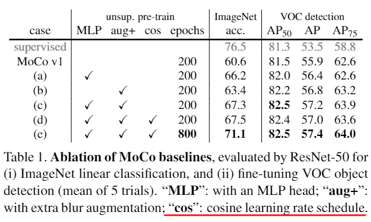如图所示，MoCo对于新的改进做了消融，不难发现，MLP和增广对于效果的改进还是很明显的。
Experiment
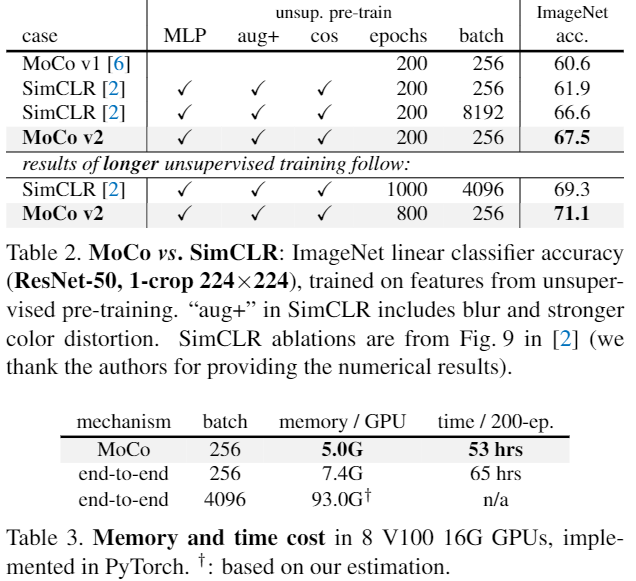实验结果如图所示，参数量、时间、准确率都吊打SimCLR (采用backbone都是ResNet50)
MoCo v3
这篇文章是一篇实验性的工作，试着把ViT作为MoCo的backbone，在这篇工作中，MoCo取消了队列(发现大的batchsize已经提供了足够多的负样本，使用队列的增益效果不大)，模仿BYOL添加了额外的预测头(prediction head, 非线性映射)，采用了对称的对比损失。
Method
预测头
在左边的encoder后，除了包含一个projection MLP之外，还包含一个prediction MLP，但在右边的encoder后，只包含一个projection MLP。
对称对比损失
公式：$ctr(q_1,k_2)+ctr(q_2,k_1)$。
其中$q_1,q_2$, $k_1,k_2$分别是两幅增广后的图片分别经过encoder和动量encoder得到的表示，然后做对称对比损失。这样做的好处在于，对比单向对比损失，减少了不同encoder提取表示带来的影响，让两个表示尽可能地接近。
总体的算法流程如下图所示。
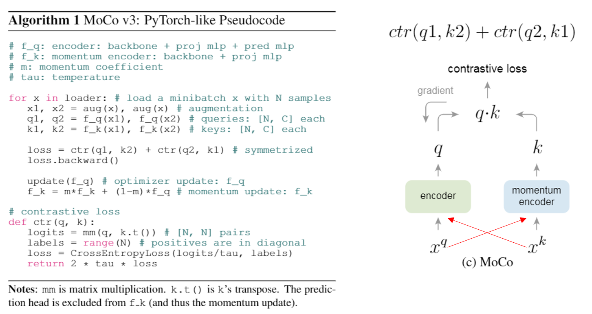Empirical Observations and Trick
在采用ViT作为backbone进行实验的过程各种，训练不稳定，造成模型性能下降，因此作者进行了一些探究，有了一些观察
Batchsize
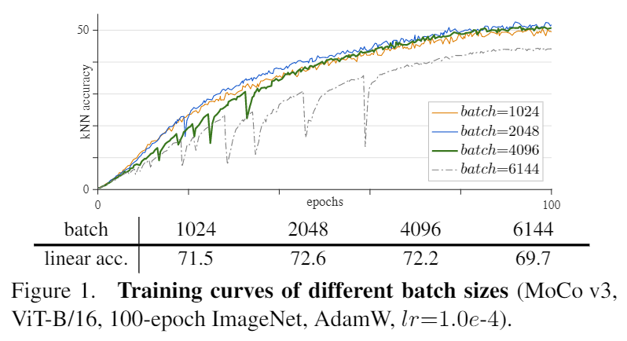作者发现，在采用大的batchsize时，准确率会发现突然下降又缓慢上升的现象。
Learning rate
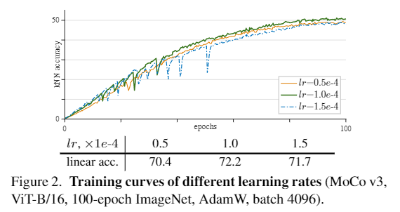同时在使用大的学习率时也有类似现象。(但这里实验采用的对比太小，学习率之间的差距应该设成一个数量级的差距进行对比)
Spike Delay
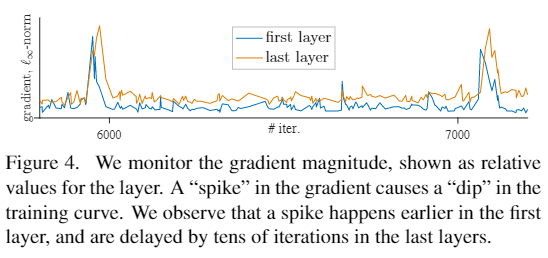把梯度打印出来后，发现每次最后一层(映射层)在出现梯度抖动之前数个迭代，第一层(ViT的Patch embedding)的梯度总会发生抖动。基于此，作者使用了一个Trick。
Trick
通过随机初始化后冻结第一层的网络参数，不传播梯度传播，直接固定，可以避免出现”dip”，使训练更加稳定，如下图所示：
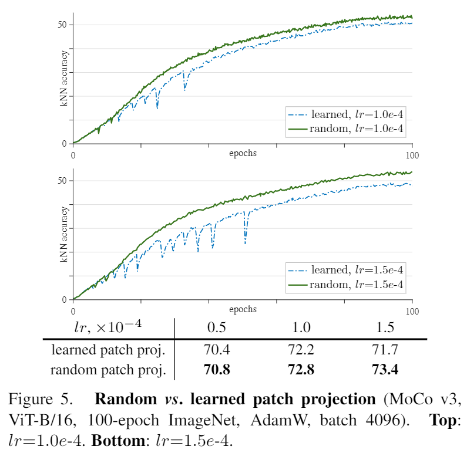这个trick应用在其他框架上也是有效果的，当然为什么这些框架都会出现这个训练问题就不太清楚了。。
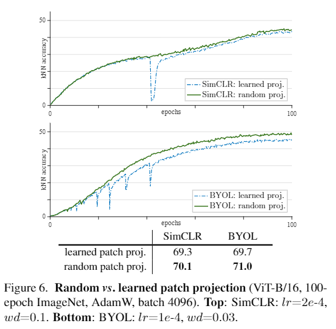Experiment
实验部分，采用的backbone有下面这几种ViT：
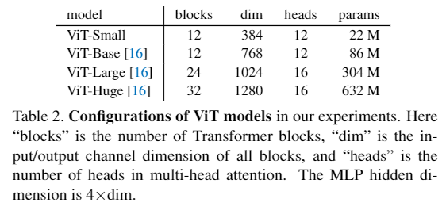效果如下：
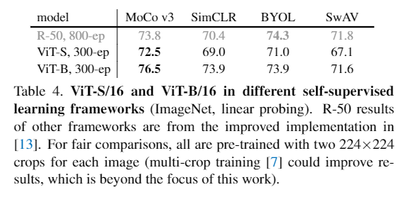 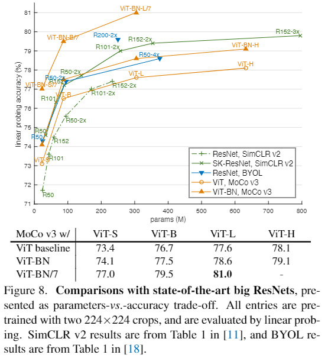其中下表第三行/7代表patch_size=7x7，使总体序列长度更长可以让Transformer效果更好(借用了iGPT结论)。